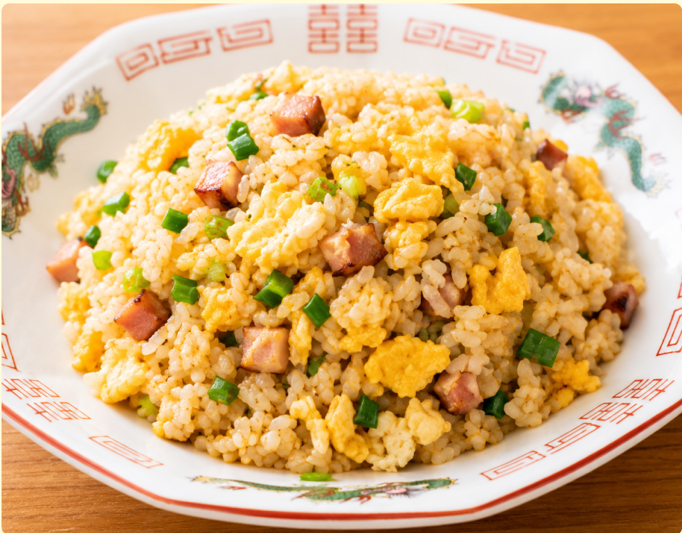
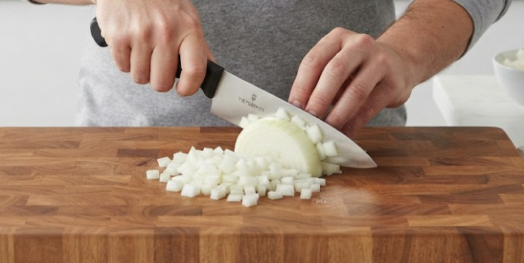
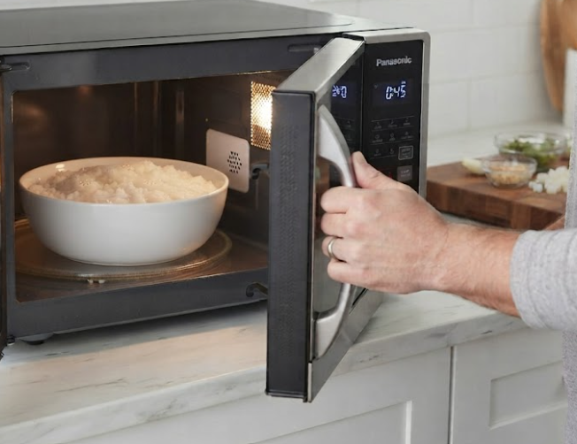
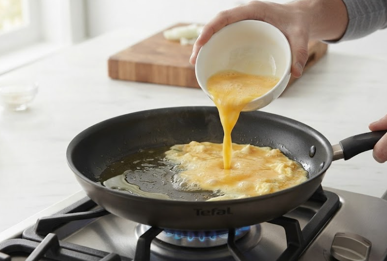
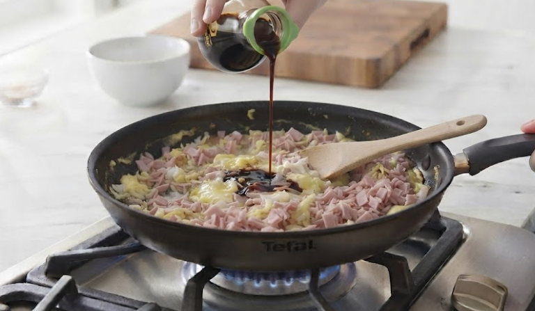
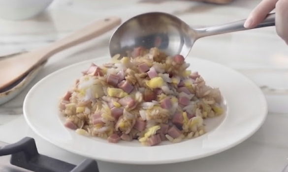

材料（１人分）
- ・ご飯茶碗1杯（約150g）
- ・卵1個
- ・ハムまたは焼き豚約30g
- ・サラダ油大さじ1
- ・塩こしょう少々
- ・しょうゆ小さじ1
必要な道具
- ・フライパン
- ・ボウルまたは小皿
- ・包丁
- ・まな板
- ・木べらまたは菜箸
注目ポイント
- 火加減に注意
- 味見推奨
作り方
① 玉ねぎはみじん切りにし、 ハムは小さく切ります。 卵は小皿に割って溶いておきます。

② ご飯が冷たい場合は、 電子レンジで軽く温めてほぐしておきます。 冷たいままだとダマになりやすいです。

③ フライパンにサラダ油を入れて中火で熱し、 溶き卵を入れます。 半熟くらいになったら木べらで軽くほぐします。

④ ご飯を加え、 卵と混ぜながら木べらでほぐすように炒めます。 切るように炒めましょう。
⑤ ハムを加え、 全体に火が通るまで炒めます。 ねぎを入れたい場合はここで加えましょう。
⑥ 塩こしょう、 しょうゆを入れて全体を混ぜます。 しょうゆはフライパンの縁から入れると 香ばしい香りが立ちます。

⑦ 全体が均一に混ざり、 ご飯がパラっとしてきたら火を止めます。 器に盛って完成です。

調理のコツ
ご飯は温かいものを使いましょう。
フライパンはしっかり熱してから
ご飯を入れると、
ベチャっとしにくくなります。
アレンジ
ウインナー、
ベーコン、
ツナなどでも作れます。
レタスを最後に加えると、
シャキシャキしたレタスチャーハンになります。
ごま油を少し加えると、
香りがよくなります。